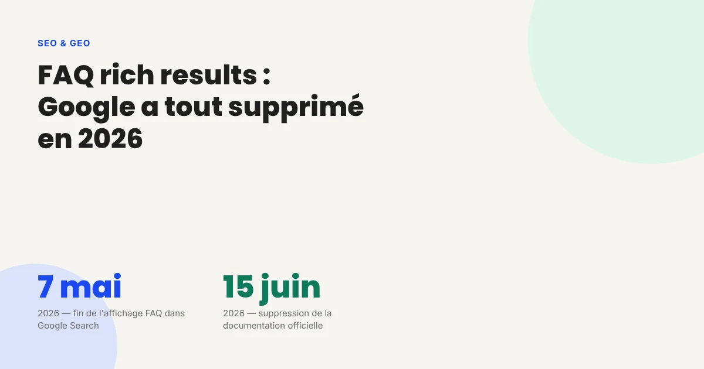

FAQ rich results : Google a supprimé la fonctionnalité, le balisage FAQPage sert-il encore ?
Google a retiré l'affichage enrichi FAQ de ses résultats de recherche au printemps 2026, puis effacé la documentation qui l'accompagnait. Le balisage Schema.org, lui, n'a pas disparu. Ce qui reste à savoir, c'est s'il sert encore un objectif concret.

Pendant des années, le balisage structuré FAQPage a eu un effet visible et mesurable : les questions-réponses qu'il décrivait pouvaient s'afficher directement sous un résultat Google, sous forme de liste dépliable, gagnant un espace disproportionné sur la page de résultats sans avoir besoin de la première position. Cet effet a disparu en 2026, de façon officielle et documentée par Google lui-même. Ce qui n'a pas disparu, en revanche, c'est le balisage — ni, surtout, la question de savoir à quoi il sert désormais.
Ce que le changelog de Google dit exactement
Le changelog officiel de Google Search Central (developers.google.com/search/updates) contient une entrée publiée le 8 mai 2026, classée sous la section « May 2026 », intitulée « Deprecating the FAQ rich result feature ». Le texte explicatif de Google y est direct : « This feature will no longer appear in Google Search starting May 7, 2026 » — la fonctionnalité n'apparaîtra plus dans Google Search à partir du 7 mai 2026, soit la veille de la publication de l'annonce elle-même.
Un deuxième jalon suit un mois plus tard : une entrée du 15 juin 2026, « Removing documentation for the FAQ rich result feature », retire la page de documentation dédiée. Le texte explicatif associé renvoie explicitement à l'annonce de mai : « The FAQ rich result feature is no longer shown in Google Search results, as announced in the changelog entry in May 2026. » Autrement dit, Google a d'abord coupé l'affichage, puis — un mois et demi plus tard — supprimé la documentation qui expliquait comment l'obtenir.
Ce que Google n'a pas dit
Nulle part dans ces deux entrées Google ne demande de retirer le balisage FAQPage existant des pages qui le portent. La suppression porte sur la fonctionnalité d'affichage et sur sa documentation, pas sur une consigne de nettoyage du marquage structuré lui-même. FAQPage reste, à ce jour, un type valide du vocabulaire Schema.org, indépendant de ce que Google choisit ou non d'en faire dans ses résultats.
Cette nuance change la question à se poser. Ce n'est plus « dois-je retirer ce balisage ? » — rien n'y oblige techniquement — mais « sert-il encore un objectif qui justifie de continuer à le maintenir et à le tenir à jour sur chaque nouvelle page » ?
L'argument des citations IA, et pourquoi il reste à prouver
Face à la disparition de l'effet Google, plusieurs éditeurs d'outils SEO ont avancé un nouvel argument : les moteurs conversationnels (ChatGPT, Claude, Perplexity) exploiteraient le balisage FAQPage comme un bloc de réponse prêt à citer, rendant le marquage toujours utile, mais pour un canal différent. Cet argument circule largement dans la littérature SEO/GEO, mais il repose presque exclusivement sur des affirmations d'éditeurs d'outils, pas sur une confirmation publique d'OpenAI, Anthropic ou Perplexity sur leur méthode d'extraction de citations.
À l'inverse, au moins une étude indépendante portant sur un échantillon de pages n'a mesuré aucune amélioration constatée des citations IA attribuable spécifiquement à la présence de ce balisage. Les deux positions existent dans la littérature disponible, sans qu'aucune des deux ne soit confirmée par une source primaire côté éditeurs d'IA. Il serait donc trompeur de présenter l'un ou l'autre camp comme un fait établi : à ce stade, c'est une question ouverte, pas une réponse qu'on peut sourcer avec certitude.
Ce qu'il reste raisonnable de faire
Trois décisions pratiques découlent de ces seuls faits vérifiés. D'abord, ne pas retirer en urgence un balisage FAQPage déjà en place : rien n'indique qu'il nuit, et le retirer ferait perdre un marquage structuré propre sans bénéfice démontré. Ensuite, ne plus investir de temps de rédaction supplémentaire dans la seule perspective de décrocher un rich result Google qui n'existe plus : cet objectif-là est caduc, point final. Enfin, traiter la question « est-ce que ça aide les citations IA » comme non tranchée plutôt que comme acquise dans un sens ou dans l'autre, et ne pas fonder une stratégie de contenu entière sur une affirmation qu'aucune source primaire ne confirme encore.
FAQ
Quand Google a-t-il supprimé le rich result FAQ ?
Selon le changelog officiel de Google Search Central, une entrée publiée le 8 mai 2026 annonce la dépréciation de la fonctionnalité, avec effet au 7 mai 2026 : le rich result FAQ n'apparaît plus dans les résultats de recherche Google depuis cette date. Google a ensuite retiré la documentation correspondante le 15 juin 2026.
Faut-il retirer le balisage FAQPage de ses pages ?
Google n'a publié aucune instruction demandant de retirer ce balisage : la documentation a été supprimée, pas remplacée par une consigne de nettoyage. FAQPage reste un type Schema.org valide. La question n'est donc pas de savoir s'il faut le retirer, mais s'il sert encore un objectif précis une fois l'effet sur les résultats Google disparu.
Le balisage FAQPage aide-t-il à être cité par ChatGPT, Claude ou Perplexity ?
C'est contesté et non vérifiable à ce stade avec une source primaire : certains éditeurs d'outils SEO affirment que les moteurs conversationnels exploitent ce balisage comme bloc de réponse prêt à citer, tandis qu'une étude indépendante n'a mesuré aucune amélioration constatée des citations IA liée spécifiquement à ce balisage. Aucun éditeur d'IA (OpenAI, Anthropic, Perplexity) n'a confirmé publiquement l'un ou l'autre.
Une stratégie de contenu à ajuster après la suppression des rich results FAQ ?
Pour aller plus loin, voir la page GEO, et l'article maillage interne : les mêmes liens servent-ils le SEO et le GEO ?.
Pour continuer sur ce sujet.